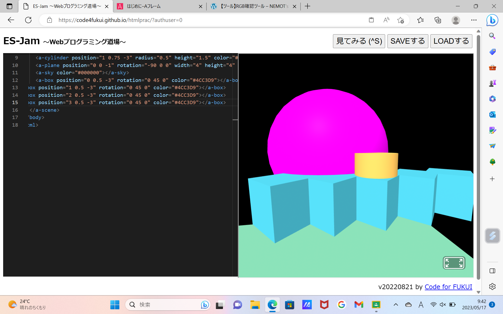
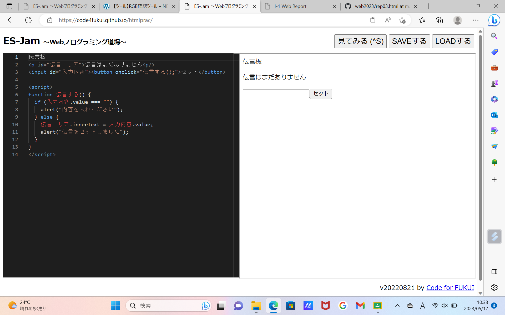

第3週目
3-1 JavaScript体験：VR空間を作る

自作した３次元空間
1.内容
A-Frameでコピーしたプログラムを使ってwebプログラミング道場で内容を変更する
2.感想
同じコードでも打つ場所が違うだけで反映されなかったり、一文字でも違えば全く役に立たなかったりしてプログラミングが思ったより難しく、
自由度が高いのだと分かった。
3-2 JavaScript体験：伝言プログラムを作る

伝言板
1.内容
Webプログラミング道場で伝言プログラムを作る
2.感想
書かれたプログラムを写すことはできるようになったが、プログラムそのものは少ししか理解できなかった。
Webプログラミング入門の(2)の２まで進むことができた。
3-3 JavaScriptプログラムの３次元空間の体験
1.内容
ガーディアンで三次元空間を体験する
2.感想
空間に大量のボールを出すことができ、それぞれに判定があって物理演算の方法が気になった。加速度や反発、減速、落下などを表現するには
どのようなプログラムを書けばいいのか知りたくなった